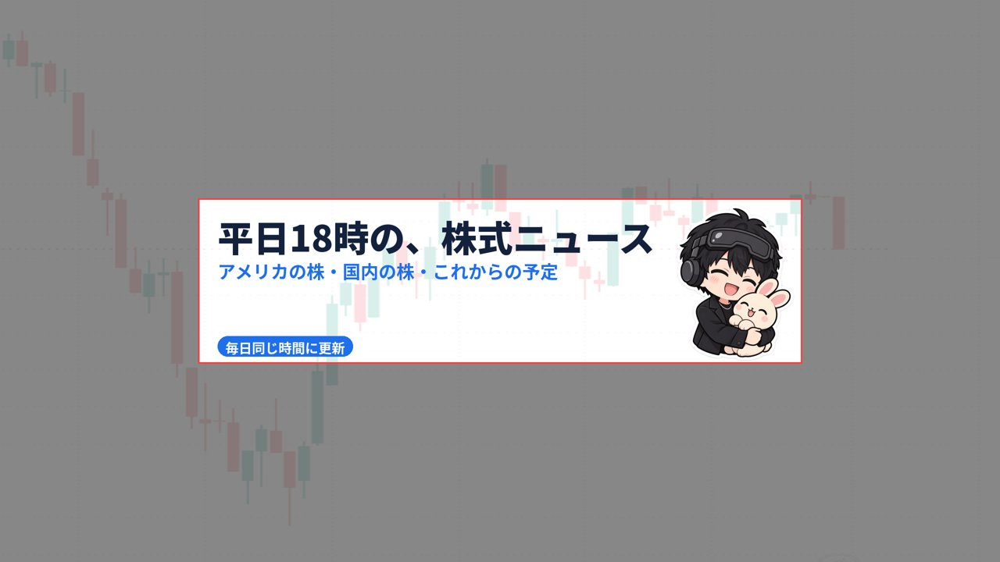
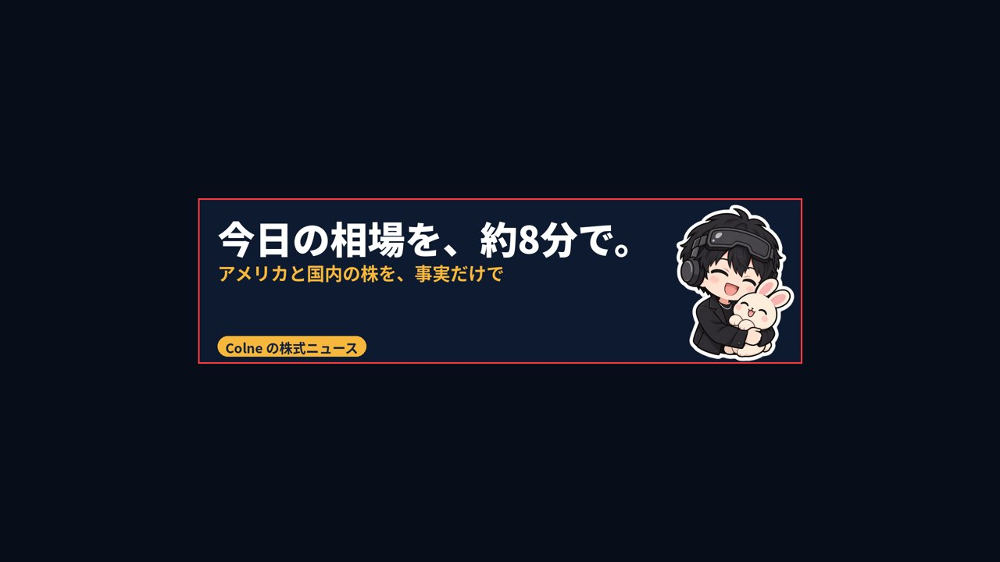
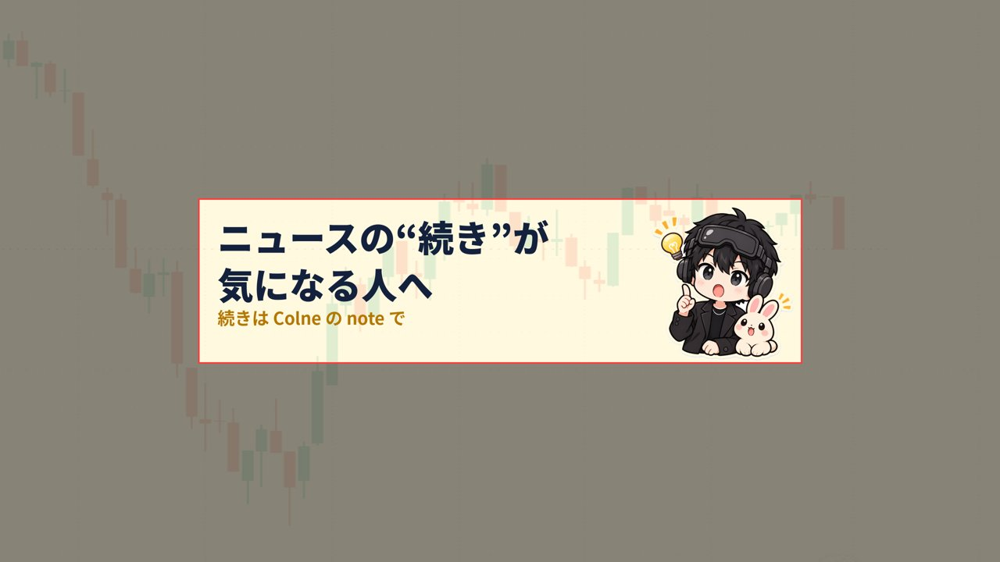
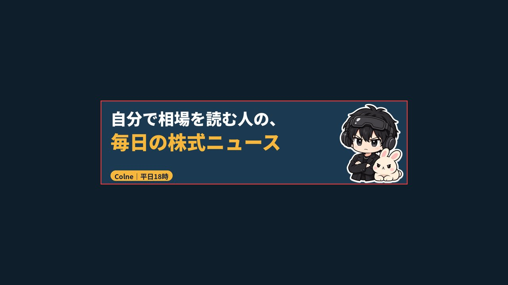
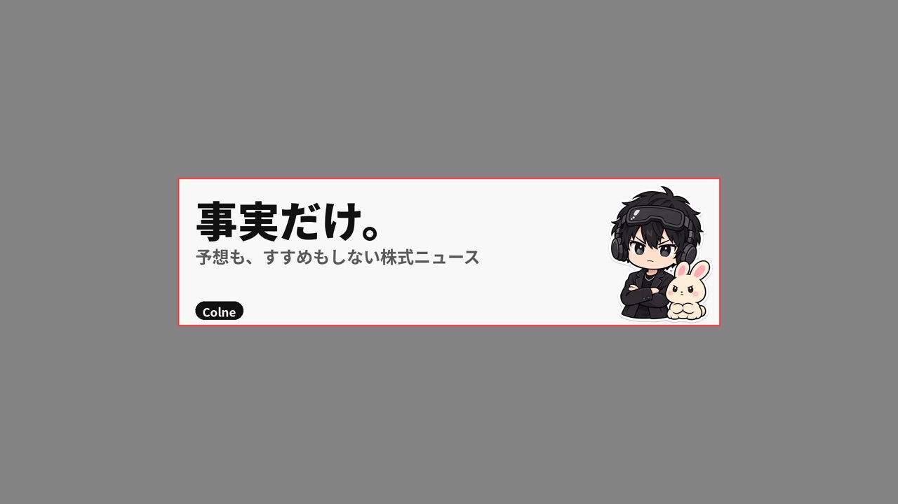
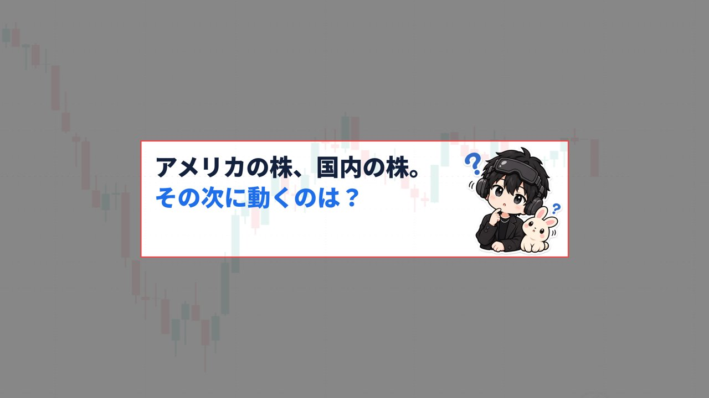
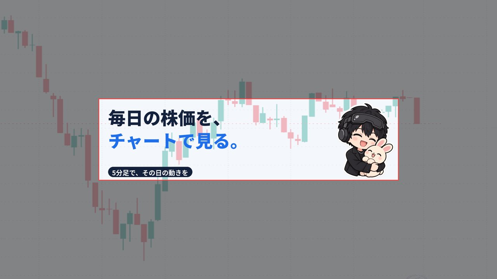
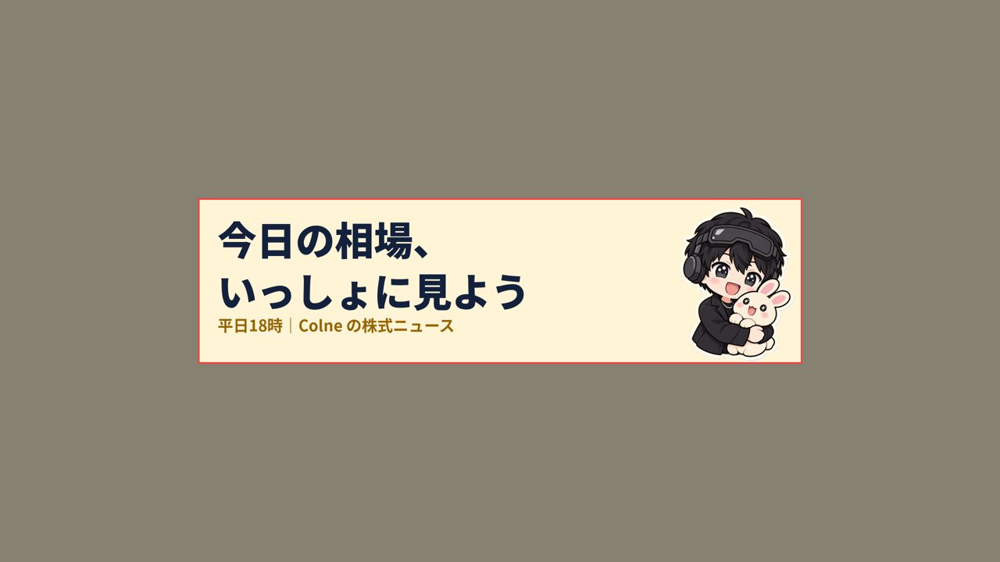
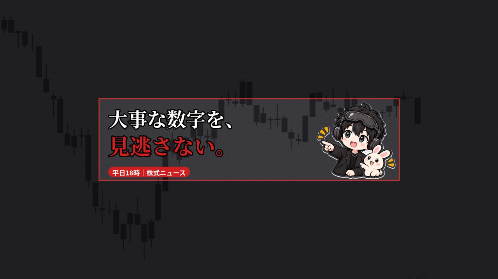
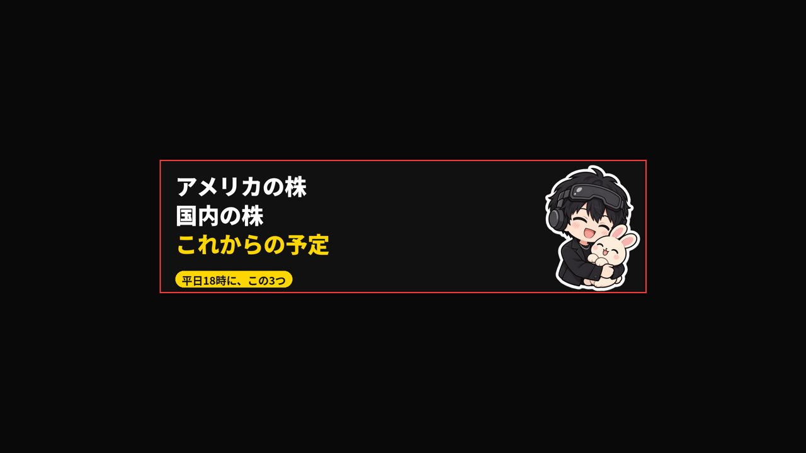

伸びているチャンネルの共通点（何のチャンネルかが一目で分かる・更新の頻度や時刻を示す）に、Dラボ（メンタリストDaiGo）の心理学の知見を1案ずつ当てて作りました。根拠のリンクは各案に付けています。
注意：根拠の多くは、広告・見出し・習慣化など別の場面の研究です。YouTubeのバナーや説明で同じ効果が出るとは限りません。2〜3案に絞って、登録率を比べるのが確実です。
| 案 | 言葉 | 当てた知見（Dラボ） | 見た目のねらい |
|---|---|---|---|
| B01 | 平日18時の、株式ニュース | 習慣は「時刻・場所」を固定すると身につく Dラボ「習慣化の科学（2016）」 | 白地・青。毎日同じ時刻を前に出し、見に来る習慣をつくる |
 実際の画像 | |||
| B02 | 今日の相場を、約8分で。 | 得・新情報・好奇心・手軽さ・信頼性の5要素。手軽さだけだと怪しまれるので信頼性を足す Dラボ「コピーライティングの科学（2019）」 | 紺地・金。手軽さ（約8分）＋信頼性（事実だけ） |
 実際の画像 | |||
| B03 | ニュースの“続き”が気になる人へ | 途中で切れた話・分からないことは気になって残る（好奇心） Dラボ「コピーライティングの科学（2019）」 | 薄い黄。好奇心でnoteへつなぐ（黄色は話しかけられやすい色） |
 実際の画像 | |||
| B04 | 自分で相場を読む人の、毎日の株式ニュース | 動詞でなく名詞（〜する人）で呼ぶと、その人らしく動きやすい Dラボ「過去の調査（キャッチコピー5案・2026-11-07）」 | 紺地。「〜する人」と名詞で呼ぶ |
 実際の画像 | |||
| B05 | 事実だけ。予想も、すすめもしない | 信頼性がないと胡散臭くなる。根拠を添える Dラボ「コピーライティングの科学（2019）」 | 白黒。信頼性を一番前に |
 実際の画像 | |||
| B06 | アメリカの株、国内の株。その次に動くのは？ | 途中で切れた話・分からないことは気になって残る（好奇心） Dラボ「コピーライティングの科学（2019）」 | 白地・青。問いで終わる |
 実際の画像 | |||
| B07 | 毎日の株価を、チャートで見る。 | ふわっとした表現より、中身が伝わる具体的な言葉のほうが行動につながる Dラボ「コピーライティングの科学（2019）」 | チャート背景。動画の中身（5分足）を具体的に見せる |
 実際の画像 | |||
| B08 | 今日の相場、いっしょに見よう | 黄色はコミュニケーションを活発にし、話しかけられやすくする Dラボ「就活セミナー＠京都（2016）」 | 薄い黄。親しみ・話しかけ |
 実際の画像 | |||
| B09 | 大事な数字を、見逃さない。 | 損失回避：人は得より損を強く気にする。控えめに使い、根拠とセットに Dラボ「お金で損する人、得する人の心理学（2018）」 | 暗い地に赤。損失回避を控えめに（赤は記憶に残る） |
 実際の画像 | |||
| B10 | アメリカの株／国内の株／これからの予定 | ふわっとした表現より、中身が伝わる具体的な言葉のほうが行動につながる Dラボ「コピーライティングの科学（2019）」 | 黒地・黄。動画の3つの中身をそのまま並べる |
 実際の画像 | |||
どの案も、下の段（note・X・ホームページの案内と注意書き）は同じです。
平日の18時に、その日の株式ニュースをお届けします。 アメリカの株、国内の株、これからの予定を、約8分の横動画と1分のショートで。 ▼毎日の相場分析と、週1回の来週の展望は note で https://note.com/colne ▼いま Colne が気にしている相場は X で https://x.com/colne_x ▼Colne ってどんな人？ https://www.colne.jp/ ※動画は事実をお伝えするもので、特定の銘柄の売り買いをすすめるものではありません。
今日の相場を、約8分で。 株価・為替・その日の予定を、チャートと数字で、事実だけでまとめています。仕事終わりの確認に。 ▼毎日の相場分析と、週1回の来週の展望は note で https://note.com/colne ▼いま Colne が気にしている相場は X で https://x.com/colne_x ▼Colne ってどんな人？ https://www.colne.jp/ ※動画は事実をお伝えするもので、特定の銘柄の売り買いをすすめるものではありません。
日経平均は、なぜ動いたのか。 その日の数字と出来事を、平日18時にまとめています。ニュースの“続き”は、Colne の note で。 ▼毎日の相場分析と、週1回の来週の展望は note で https://note.com/colne ▼いま Colne が気にしている相場は X で https://x.com/colne_x ▼Colne ってどんな人？ https://www.colne.jp/ ※動画は事実をお伝えするもので、特定の銘柄の売り買いをすすめるものではありません。
根拠：Dラボ「過去の調査（キャッチコピー5案・2026-11-07）」
自分で相場を読む人のための、毎日の株式ニュースです。 予想やおすすめは入れず、判断の材料になる事実だけを、平日18時にお届けします。 ▼毎日の相場分析と、週1回の来週の展望は note で https://note.com/colne ▼いま Colne が気にしている相場は X で https://x.com/colne_x ▼Colne ってどんな人？ https://www.colne.jp/ ※動画は事実をお伝えするもので、特定の銘柄の売り買いをすすめるものではありません。
事実だけをお伝えする株式ニュースです。 数字はすべて出典を確かめ、チャートは TradingView の実際の画面を使っています。予想や売り買いのすすめはしません。 ▼毎日の相場分析と、週1回の来週の展望は note で https://note.com/colne ▼いま Colne が気にしている相場は X で https://x.com/colne_x ▼Colne ってどんな人？ https://www.colne.jp/ ※動画は事実をお伝えするもので、特定の銘柄の売り買いをすすめるものではありません。
毎日やること： ・アメリカの株（ダウ・S&P500・ナスダック） ・国内の株（日経平均・TOPIX・動かした銘柄） ・これからの予定（経済指標・決算） を、平日18時に約8分で。 ▼毎日の相場分析と、週1回の来週の展望は note で https://note.com/colne ▼いま Colne が気にしている相場は X で https://x.com/colne_x ▼Colne ってどんな人？ https://www.colne.jp/ ※動画は事実をお伝えするもので、特定の銘柄の売り買いをすすめるものではありません。
根拠：Dラボ「自己紹介のフレームワーク（ブログ 2022）」
Colne は、株式と暗号資産の運用に携わる投資家です。 このチャンネルでは、毎日の株式ニュースを事実だけでお届けしています。 これから、相場の特集動画も始めます。 ▼毎日の相場分析と、週1回の来週の展望は note で https://note.com/colne ▼いま Colne が気にしている相場は X で https://x.com/colne_x ▼Colne ってどんな人？ https://www.colne.jp/ ※動画は事実をお伝えするもので、特定の銘柄の売り買いをすすめるものではありません。
投資の判断は、最初に見た数字や、思い込みに引っぱられがちです。 だからこそ、まずは事実を。毎日の株価と出来事を、平日18時に約8分でまとめています。 ▼毎日の相場分析と、週1回の来週の展望は note で https://note.com/colne ▼いま Colne が気にしている相場は X で https://x.com/colne_x ▼Colne ってどんな人？ https://www.colne.jp/ ※動画は事実をお伝えするもので、特定の銘柄の売り買いをすすめるものではありません。
今日の相場、いっしょに見ませんか。 仕事終わりの18時に、アメリカと国内の株、これからの予定を、Colne がまとめてお届けします。 ▼毎日の相場分析と、週1回の来週の展望は note で https://note.com/colne ▼いま Colne が気にしている相場は X で https://x.com/colne_x ▼Colne ってどんな人？ https://www.colne.jp/ ※動画は事実をお伝えするもので、特定の銘柄の売り買いをすすめるものではありません。
根拠：Dラボ「お金で損する人、得する人の心理学（2018）」
大事な数字を、見逃さないために。 その日の株価・為替・予定を、平日18時にまとめています。毎日の確認に。 ▼毎日の相場分析と、週1回の来週の展望は note で https://note.com/colne ▼いま Colne が気にしている相場は X で https://x.com/colne_x ▼Colne ってどんな人？ https://www.colne.jp/ ※動画は事実をお伝えするもので、特定の銘柄の売り買いをすすめるものではありません。
N1〜N3のチャンネル名と、B1〜B3のバナーは このページの上の版 にあります。